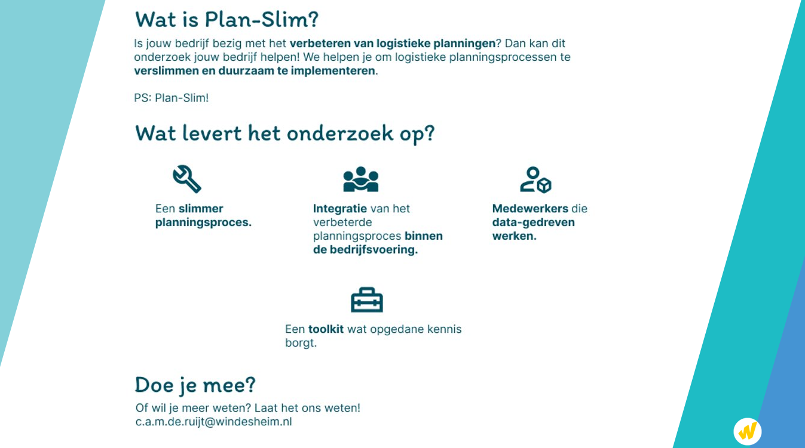

In ons streven naar innovatie in de logistieke sector hebben de hogescholen HAN en Windesheim een baanbrekend onderzoeksproject - Plan-Slim - opgezet dat zich richt op de integratie van kunstmatige intelligentie (AI) in logistieke processen. Dit project is onderdeel van een RAAK-mkb aanvraag, gesteund door SPRONG KmD, gericht op het midden- en kleinbedrijf (mkb). We erkennen dat in de logistieke planning vaak nog traditionele methoden worden gebruikt.
De kern van dit onderzoeksproject en de RAAK-mkb aanvraag is de ontwikkeling van AI-gestuurde oplossingen voor veelvoorkomende uitdagingen zoals personeelsplanning, logistieke en warehouse planning, en inventory management. Ons doel is om niet alleen de efficiëntie te verhogen, maar ook om de bedrijven in het mkb te empoweren met de nieuwste technologieën, waarbij de vraagstukken aanwijsbaar afkomstig zijn van het mkb.
Wij nodigen logistiek managers en bedrijven in het mkb hartelijk uit om deel te nemen aan dit innovatieve project. Uw inbreng is cruciaal voor het succes van ons onderzoek en de RAAK-mkb aanvraag. Door deel te nemen, krijgt u de unieke kans om direct invloed uit te oefenen op de ontwikkeling van AI-oplossingen die specifiek zijn ontworpen om uw logistieke uitdagingen aan te pakken.
Als deelnemer krijgt u de mogelijkheid om:
Uw deelname is niet alleen een investering in de toekomst van uw bedrijf, maar ook in de vooruitgang van de gehele logistieke sector. Wij waarderen uw tijd en expertise en hopen u te mogen verwelkomen als deelnemer aan dit project.
Interesse? Neem contact op via Nienke Hofstra voor meer informatie en om uw deelname te bevestigen.
We kijken uit naar een vruchtbare samenwerking!